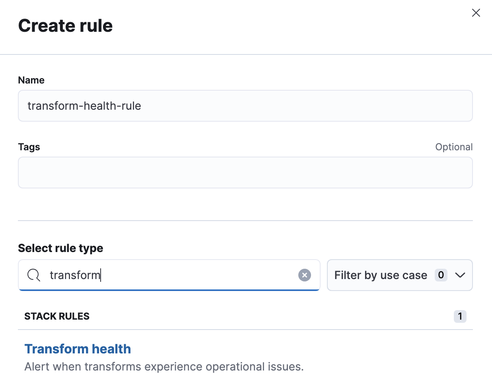

Generating alerts for transformsedit
Kibana alerting features include support for transform health rules, which check the health of continuous transforms with certain conditions. If the conditions of the rule are met, an alert is created and the associated actions run. For example, you can create a rule to check if a continuous transform is started and to notify you in an email if it is not. To learn more about Kibana alerting features, refer to Alerting.
Creating a ruleedit
You can create transform rules under Stack Management > Rules.
-
On the Create rule window, give a name to the rule and optionally provide tags. Select the transform health rule type:
 -
Select the transform or transforms to include. You can also use a special
character (
*) to apply the rule to all your transforms. Transforms created after the rule are automatically included. -
The following health checks are available and enabled by default:
- Transform is not started
- Get alerts when a transform is not started or is not indexing any data. The notification message recommends the necessary actions to solve the error.
- Unhealthy transform
- Get alerts when a transform has an unhealthy status. The notification message contains status details and related issues.

- Set the check interval, which defines how often to evaluate the rule conditions.
- In the advanced options, you can change the number of consecutive runs that must meet the rule conditions before an alert occurs. The default value is 1.
As the last step in the rule creation process, define its actions.
Defining actionsedit
You can add one or more actions to your rule to generate notifications when its conditions are met and when they are no longer met. In particular, this rule type supports:
- alert summaries
- actions that run when an issue is detected
- recovery actions that run when the rule conditions are no longer met
For each action, you must choose a connector, which provides connection information for a Kibana service or third party integration. For more information about all the supported connectors, go to Connectors.
After you select a connector, you must set the action frequency. You can choose to create a summary of alerts on each check interval or on a custom interval. For example, send notifications that summarize the new, ongoing, and recovered alerts:
If you choose a custom action interval, it cannot be shorter than the rule’s check interval.
Alternatively, you can set the action frequency such that actions run for each alert. Choose how often the action runs (at each check interval, only when the alert status changes, or at a custom action interval). You must also choose an action group, which indicates whether the action runs when the issue is detected or when it is recovered.
You can further refine the conditions under which actions run by specifying that actions only run when they match a KQL query or when an alert occurs within a specific time frame.
There is a set of variables that you can use to customize the notification messages for each action. Click the icon above the message text box to get the list of variables or refer to Action variables.
After you save the configurations, the rule appears in the Rules list where you can check its status and see the overview of its configuration information.
The name of an alert is always the same as the transform ID of the associated transform that triggered it. You can mute the notifications for a particular transform on the page of the rule that lists the individual alerts. You can open it via Rules by selecting the rule name.
Action variablesedit
The following variables are specific to the transform health rule type. You can also specify variables common to all rules.
-
context.message -
A preconstructed message for the rule. For example:
Transform test-1 is not started. -
context.results -
The most recent results, which you can iterate over by using the Mustache template array syntax. For example, the message in an email connector action might contain:
[{{rule.name}}] Transform health check result: {{context.message}} {{#context.results}} Transform ID: {{transform_id}} {{#description}}Transform description: {{description}} {{/description}}{{#transform_state}}Transform state: {{transform_state}} {{/transform_state}}{{#health_status}}Transform health status: {{health_status}} {{/health_status}}{{#issues}}Issue: {{issue}} Issue count: {{count}} {{#details}}Issue details: {{details}} {{/details}}{{#first_occurrence}}First occurrence: {{first_occurrence}} {{/first_occurrence}} {{/issues}}{{#failure_reason}}Failure reason: {{failure_reason}} {{/failure_reason}}{{#notification_message}}Notification message: {{notification_message}} {{/notification_message}}{{#node_name}}Node name: {{node_name}} {{/node_name}}{{#timestamp}}Timestamp: {{timestamp}} {{/timestamp}} {{/context.results}}
For more examples, refer to Rule action variables.